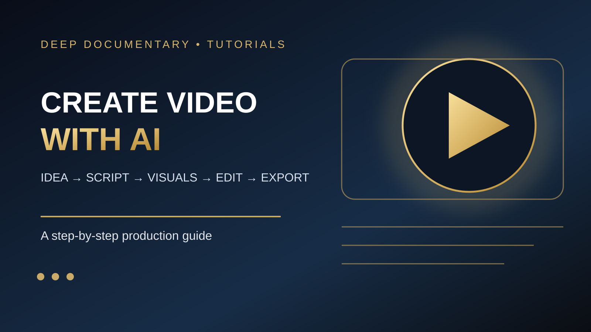

مسودة تحريرية · الشروحات
كيف تستخدم الذكاء الاصطناعي لإنشاء فيديو احترافي من الصفر؟
دليل عملي يشرح رحلة الإنتاج من الفكرة والسيناريو إلى الصورة والصوت والمونتاج والتصدير، مع قواعد واضحة للتحقق من المصادر والتراخيص.
من الفكرة إلى خطة إنتاج واضحة
ابدأ بتحديد الجمهور، والرسالة الواحدة التي تريد أن يتذكرها، والمنصة التي سيُعرض عليها الفيديو. اكتب وصفًا من سطر واحد للفكرة، ثم حدّد المدة ونسبة الأبعاد. فيديو عمودي 9:16 يناسب المقاطع القصيرة على الهاتف، بينما 16:9 شائع للفيديو الأفقي. لا تبدأ بتوليد عشرات المشاهد قبل أن تعرف ما الذي تريد قوله.
اكتب السيناريو بمساعدة الذكاء الاصطناعي
اطلب من المساعد كتابة افتتاحية جاذبة، ثم متنًا واضحًا وخاتمة قصيرة، مع تقسيم السيناريو إلى مشاهد ومدد تقريبية. اطلب منه التمييز بين الحقائق المؤكدة والافتراضات، وإرفاق مصادر لكل معلومة قابلة للتحقق. راجع النص بصوت مرتفع؛ الجملة التي تبدو جيدة على الورق قد تكون طويلة عند سماعها.
حوّل السيناريو إلى قائمة لقطات
أنشئ جدولًا يضم رقم المشهد، مدته، ما يظهر على الشاشة، نص التعليق، مصدر الصورة أو الفيديو، والمؤثرات المطلوبة. اجعل لكل لقطة وظيفة سردية. اختر أسلوبًا بصريًا ثابتًا: ألوان محددة، نوع إضاءة، وحركة كاميرا متسقة. استخدم صورًا مرجعية مرخّصة عندما تحتاج إلى اتساق المكان أو الشخصية.
أنشئ المشاهد: توليد أم مواد جاهزة؟
يمكنك توليد صور ثابتة ثم تحريكها، أو توليد مقاطع فيديو قصيرة، أو استخدام مواد أرشيفية مرخّصة. لا تفترض أن أي أداة مجانية أو أن نتائجها بلا علامة مائية؛ راجع شروط الخطة الحالية قبل الإنتاج. في الفيديو الوثائقي، لا تعرض مشهدًا مولدًا على أنه تسجيل حقيقي لحدث تاريخي؛ ضع وصفًا واضحًا عند الحاجة.
التعليق الصوتي والموسيقى
سجّل صوتك في مكان هادئ أو استخدم تحويل النص إلى كلام مع التحقق من حقوق الاستخدام التجاري وشروط استنساخ الأصوات. اجعل سرعة الإلقاء مريحة، وأضف وقفات طبيعية. اختر موسيقى مرخّصة، وخفّضها تحت التعليق الصوتي؛ لا تستخدم موسيقى مشهورة لمجرد أنها متاحة للاستماع.
المونتاج وصناعة الإيقاع
رتّب اللقطات وفق السيناريو، واقطع كل لقطة عند اكتمال فكرتها. أضف عناوين قصيرة وترجمة نصية متزامنة مع الكلام، وابتعد عن الانتقالات المبالغ فيها. افحص توازن الصوت، وتناسق الألوان، وسلامة الكتابة، ثم شاهد الفيديو كاملًا من دون توقف لاكتشاف المواضع المملة أو غير الواضحة.
التصدير ومراجعة الجودة
صدّر ملف MP4 بإعدادات مناسبة للمنصة والجهاز، وافحص الملف الناتج لا مجرد شاشة المعاينة. تأكد من عدم وجود شاشة سوداء، أو نص مقصوص، أو اختلاف مستوى الصوت، أو علامة مائية غير متوقعة. احتفظ بنسخة المشروع ومصادر الصور والتراخيص.
مثال تطبيقي: فيديو مدته 60 ثانية
الفكرة: لماذا يبدو القمر أكبر قرب الأفق؟ ابدأ بسؤال خلال أول خمس ثوانٍ، ثم اعرض مقارنة بصرية توضيحية، واشرح أن الوهم القمري ظاهرة إدراكية معقدة وليست نتيجة تغير حقيقي كبير في حجم القمر. اختم بتجربة يمكن للمشاهد تنفيذها بمقارنة صورة القمر قرب الأفق وصورة له وهو مرتفع باستخدام إعدادات تصوير متقاربة. لا تعرض هذا التفسير على أنه حسم كامل لكل أسباب الوهم.
خريطة دقيقة لفيديو مدته دقيقة
0–5 ثوانٍ: سؤال بصري قوي. 5–15: عرض المشكلة أو اللغز. 15–30: المعلومة الأساسية مع مثال. 30–45: تفسير مدعوم برسم واضح. 45–55: تجربة أو نتيجة عملية. 55–60: خاتمة مختصرة ودعوة لمشاهدة المزيد. هذه مدد مقترحة، وليست قاعدة ثابتة.
قالب جاهز لكتابة سيناريو بالفكرة
انسخ هذا الطلب إلى مساعد الكتابة: «أنت كاتب فيديو وثائقي. اكتب سيناريو مدته 60 ثانية عن [الموضوع] لجمهور [الجمهور]. ابدأ بسؤال مشوّق دون مبالغة، وقدّم معلومات يمكن التحقق منها، وقسّم النص إلى ست لقطات مع المدة والتعليق الصوتي والوصف البصري والمصدر المقترح. لا تخترع أرقامًا أو اقتباسات، واذكر ما يحتاج مراجعة بشرية». بعد ظهور النتيجة، تحقق من كل ادعاء قبل تحويله إلى صوت.
كيف تكتب وصفًا قويًا لتوليد الفيديو؟
ابدأ بتحديد الموضوع، والحركة المرئية، والبيئة، والإضاءة، وحركة الكاميرا، والأسلوب. مثال: «لقطة سينمائية واسعة للقمر فوق أفق مدينة عند الغسق، تتحرك الكاميرا ببطء إلى اليمين، غيوم خفيفة تمر أمامه، إضاءة طبيعية، ألوان واقعية، بلا نصوص أو شعارات». إذا كنت تحرك صورة موجودة، ركّز على الحركة بدل إعادة وصف كل تفاصيل الصورة. تجنب طلب أحداث كثيرة في مقطع قصير.
كيف تحافظ على ثبات الشخصية والمشهد؟
احتفظ بصورة مرجعية للشخصية والملابس والخلفية، ووصف ثابت للألوان والعدسة والإضاءة. ولّد مشهدًا تجريبيًا أولًا قبل سلسلة اللقطات. عند ظهور تغيّر غير مرغوب في الوجه أو الأشياء، أعد توليد اللقطة باستخدام المرجع نفسه بدل ترقيعها بمؤثرات قد تزيد المشكلة. قد تتيح بعض الأدوات استخدام صور مرجعية أو إطارات بداية ونهاية بحسب النموذج والخطة.
اختيار الأدوات: ماذا تستخدم ولماذا؟
لإنشاء لقطات مولدة، راجع Runway أو Google Flow مع فحص الميزات والرصيد المتاح في حسابك. للمونتاج النهائي يمكنك استخدام DaVinci Resolve بنسخته المجانية أو محرر Canva السهل. ليست كل ميزة ذكاء اصطناعي ضمن الخطة المجانية، وقد تختلف العلامة المائية وحقوق التصدير حسب المنتج. لا تشترِ اشتراكًا قبل إنتاج تجربة قصيرة تقيس الجودة والتكلفة.
خطة بديلة عند غياب الميزانية
إذا لم تتوفر ميزانية للتوليد، اكتب السيناريو بمساعدة الذكاء الاصطناعي، واجمع صورًا ولقطات مرخّصة، ثم أنشئ حركة بسيطة بالقص والتحريك والتكبير داخل محرر مجاني. سجّل تعليقك الصوتي بنفسك، وأضف ترجمة وموسيقى مسموحة. قد يكون هذا المسار أكثر قابلية للتحكم من الاعتماد على عشرات عمليات التوليد غير المتوقعة.
المراجعة القانونية والأخلاقية
افحص ترخيص كل صورة وصوت وموسيقى، واحتفظ برابط المصدر واسم صاحب العمل وشروط النسبة إن وجدت. احصل على موافقة صريحة قبل استنساخ صوت شخص حقيقي. لا تستخدم وجوه أشخاص أو علامات تجارية بطريقة توحي بتأييدهم للفيديو. ضع إشارة «مشهد تمثيلي مولّد بالذكاء الاصطناعي» عندما قد يختلط الأمر على المشاهد.
اختبار الجودة قبل النشر
شاهد الفيديو على شاشة هاتف ثم على كمبيوتر. تحقق من دقة العناوين والترجمة، ومن وضوح الصوت في السماعات العادية، ومن عدم ظهور تشوهات في اليدين أو الوجوه أو النصوص داخل اللقطات المولدة. قارن كل معلومة بمصدرها. تأكد من أن الغلاف والعنوان يعكسان المحتوى فعلًا ولا يعدان بشيء غير موجود.
جدول مقارنة الأدوات
Runway: مناسب لتوليد مقاطع من نص أو صورة، مع استهلاك رصيد بحسب النموذج والمدة. Google Flow: يتيح إنشاء مشاهد من النص أو الإطارات المرجعية، وتتغير المزايا حسب المنطقة والخطة. Canva: محرر سهل لتجميع الفيديو والنصوص، وبعض الميزات متاحة باشتراك. DaVinci Resolve: مناسب للمونتاج وتصحيح الألوان والصوت، مع نسخة مجانية ونسخة Studio مدفوعة. Blender: أداة مفتوحة المصدر للمشاهد ثلاثية الأبعاد والتحرير. لا توجد أداة واحدة تتفوق في كل مرحلة؛ اختر بحسب هدف الفيديو والوقت والتكلفة.
حساب تكلفة التوليد قبل البداية
لا تحسب مدة الفيديو النهائي وحدها: إذا احتجت إلى ست لقطات طول كل منها خمس ثوانٍ، فهذه 30 ثانية من التوليد الناجح، لكن إعادة توليد ثلاث لقطات ترفع الاستهلاك. مثال توضيحي: في Runway Gen-4.5 تشير وثائق الشركة إلى 12 رصيدًا لكل ثانية، ولذلك قد تحتاج 360 رصيدًا لتوليد 30 ثانية قبل الإعادات. هذه أرصدة وليست سعرًا بالدولار؛ راجع باقتك الحالية. تستطيع تقليل التكلفة بتجربة لقطات قصيرة أولًا واستعمال صور ثابتة مرخّصة في المشاهد التفسيرية.
الصور والرسوم: متى تستخدم كل نوع؟
استخدم الصورة الحقيقية المرخّصة عندما تروي حدثًا موثقًا أو تعرض مكانًا موجودًا. استخدم الرسم البياني عندما تشرح علاقة أو مقارنة أو تسلسلًا زمنيًا. استخدم المشهد المولد بالذكاء الاصطناعي عندما تريد تصوير فكرة افتراضية أو إعادة تمثيل، مع توضيح طبيعته. ضع وصفًا نصيًا بديلًا لكل صورة، واذكر المصدر والترخيص في تعليق الصورة أو صفحة الاعتمادات.
الأخطاء العشرة التي تفسد الفيديو
من الأخطاء الشائعة: بدء التوليد بلا سيناريو؛ المبالغة في الانتقالات؛ تغيير الأسلوب البصري بين اللقطات؛ الاعتماد على نصوص مولدة داخل الصورة؛ تجاهل سلامة الحقائق؛ استخدام موسيقى غير مرخّصة؛ تعليق صوتي سريع؛ ترجمة غير متزامنة؛ تصدير بنسبة أبعاد خاطئة؛ ونشر الفيديو دون مشاهدته كاملًا. الحل ليس مؤثرات أكثر، بل خطة واضحة ومراجعة نهائية.
أسئلة شائعة
هل يمكن إنشاء فيديو كامل مجانًا؟ نعم، باستخدام نص مكتوب وصور ومواد مرخّصة ومحرر مجاني وصوتك؛ لكن توليد فيديو بالذكاء الاصطناعي قد يخضع لحدود الرصيد. هل الجودة 4K مضمونة؟ لا؛ الدقة الأصلية تختلف عن الترقية إلى 4K. هل يمكن نشر الفيديو تجاريًا؟ يعتمد على حقوق كل عنصر وشروط الخدمة. هل أحتاج إلى خبرة مونتاج؟ ليس للبدء، لكن تعلم الإيقاع والصوت والتصدير يرفع الجودة بشكل واضح.
ملاحظة عن أسعار الأدوات في نوفمبر 2026
وفق دليل Runway الرسمي، يستهلك Gen-4.5 اثني عشر رصيدًا لكل ثانية ويُخرج فيديو بدقة 720p؛ لذلك لا تعادل عبارة «4K» بالضرورة جودة توليد أصلية. وتوضح صفحة مساعدة Google Flow أن عدد الأرصدة وحدود الاستخدام يختلفان باختلاف النموذج والاشتراك. قد تتغير هذه الشروط؛ تحقق من المصادر قبل الشراء.
أدوات ومراجع رسمية
- Runway — Gen-4.5 official guide
- Google Flow — official video guide
- Google Flow — Credits and pricing
- Runway — Gen-4.5 credits and settings
- Canva — Video Editor
- DaVinci Resolve — official editor
- Blender — Video Editing
- NASA — Science resources
- Creative Commons — License guidance
تحقق من الخطط والأسعار وحقوق الاستخدام مباشرة في المواقع الرسمية قبل اختيار أي خدمة؛ قد تتغير الشروط.